Présentation
Les groupes
L'équipe
Espace parents
FR
EN

Bienvenue à la Crèche des Morillons
Une institution subventionnée par la Ville de Genève
Pour toute demande d'inscription, veuillez contacter le
Bureau d'information petite enfance de la Ville de Genève
Coordonnées
mor@ipe-ge.ch
022 788 2610
Chemin du Pommier 43
1218 Le Grand-Saconnex
mor@ipe-ge.ch
022 788 2610
Chemin du Pommier 43, 1218 Le Grand-Saconnex